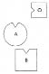
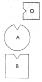

HELLINGER Kişi, annesi ona “Babandan gelen işe yaramaz. Yalnızca benden al” dediğinde bağımlı olur. O zaman çocuk anneden öç alır ve ondan, kendisine zarar verecek kadar çok şey alır. Dolayısıyla bağımlılık, çocuğun, onun babadan almasına engel olan anneden aldığı intikamdır. -Bunu anlayabiliyor musun?
CLAUDIA Evet, ama sorum bu değildi. Yine de benim için çok önemli bu. Asıl sorum, çocuğun içinde büyüyeceği aile anneye çok az değer verirken çocuk ya da annesi için ne yapabileceğimdi? Nasıl müdahale edebilirim?
HELLINGER Bağımlılığın nasıl oluştuğunu kocasına açıklayabilirsin. Bu ona başka bir bakış açısı kazandırır. Ve ona, çocuğun kişiliğinde annesini sayıp sevecek olursa çocuğun iyi olacağını söyleyebilirsin.
Sana bir örnek vereyim. Bir kadın kocasını, adam artık kendi kendisi için bir şeyler yapsın diye psikoterapiye sürükledi. Kadın pek çok gruba katılmış, primer terapi ve daha neler yapmıştı. Adam böylece bir grup çalışmasına geldi. Onu gördüğümde “Senin burada işin ne” diye sordum, “İnsan sana baktığında iyi olduğunu görüyor. Burada olmana gerek yok.” Çok mutlu oldu. Zanaatkârdı, sade bir adam. Birkaç gün sonra nasıl olup da bu kadar iyi olduğunu anlamadığını söyledi; babasını hiç tanımamıştı. Doğumundan beş hafta önce babası savaşta ölmüştü. “Annen babanı çok sevip saydığı için onu özlememiş olabilirsin” dedim. “Evet” dedi, “öyleydi.” Daha sonra ailesini dizdik. Sizlere bu dizimi göstereyim.
1. Resim

B Baba, savaşta ölmüş
A Anne
O Oğul (=Danışan)
HELLINGER Dizim böyleydi. Kadın, “Kendimi yarı yarıya erkek gibi hissediyorum” dedi. Bunun üzerine erkeği tam arkasına yerleştirdim.
2. Resim

HELLINGER “Şimdi o ve ben biriz” dedi kadın. Bu oğula kendini çok iyi hissettirdi. Biri diğerini saydığında böyledir bu. Bu durumda oğul her ikisini de temsil edebilir.
ANNE Bunu ben de hissediyorum.
HELLINGER Oğula Sen nasılsın?
OĞUL İçim sımsıcaktı.
HELLINGER Baba eksik değildi, çünkü sayılıyordu.
Gruba Baba çocuklarda anneyi, anne de onlarda babayı sayıp onurlandırdığında çocuklar kendilerini iyi hisseder. Bu nedenle boşanmalarda çocuklar, onların varlığında eşe en çok saygı gösteren tarafa verilmelidir. Bu da genelde erkektir. Ama bunu kadınlar da kazanabilir.
CLAUDIA Nasıl?
HELLINGER Bunu onlar da yaparak.
THEA Bağımlılık konusunda bir sorum daha var benim. Bağımlılığın babaya sadakat demek olduğunu söylemiştin. Anne, babadan iyi bir şey gelmeyeceğini söylediği için çocuk bağımlı olur demiştin. Ama kaçırdığım bir şey daha, çok önemli bir şey daha söyledin, bağımlılıkta yaşanan bir şey.
HELLINGER Çocuk anneden o kadar fazla alır ki bu ona zarar verir. Bu bağımlılıktır. Bu nedenle bağımlıları yalnızca erkekler tedavi etmelidir. Kadınlar bu konuda yeterli değildir, meğer ki bağımlının kişiliğinde babasını saysınlar. O zaman, örneğimizde de gördüğümüz gibi onu temsil edebilirler.
DAGMAR Bunu ilke olarak böyle söyleyebilir miyiz, yoksa bir erkekle kadının bağımlı olması arasında fark var mıdır?
HELLINGER Hayır, ilke olarak her zaman böyledir bu.
DAGMAR Yani durum her zaman annenin bağımlı hale gelen çocuğa “Babandan gelen işe yaramaz, yalnızca benden al” demesidir. Peki babanın kendisi de bağımlı, diyelim alkolik ise ve anne oğluna “Babanın yaptığı işe yaramaz” derse?
HELLINGER Bu durumda annenin oğluna “Sende babanı seviyorum ve onun gibi olman benim için uygun” demesi gerekir. Bunun etkisi alışılmadıktır. Çünkü baba oğlun varlığında saygı gördüğünde oğlun da alkolik olmasına gerek kalmaz. Dolayısıyla buradaki davranış biçimi çoğunlukla uygulamadakinin tam tersidir.
THOMAS Bütün Batı dünyasında bağımlılık sorunlarının kitlesel artışının bununla ilintili olduğu anlamı çıkıyor buradan.
HELLINGER Evet. Erkekler gerilemede. Kadınlar tarafından giderek daha da fazla küçük görülüyorlar, böylece de bağımlılıklar artıyor. Bu da son derece doğal bir süreç. Kadınlar erkekleri öylece devre dışı bırakamaz.